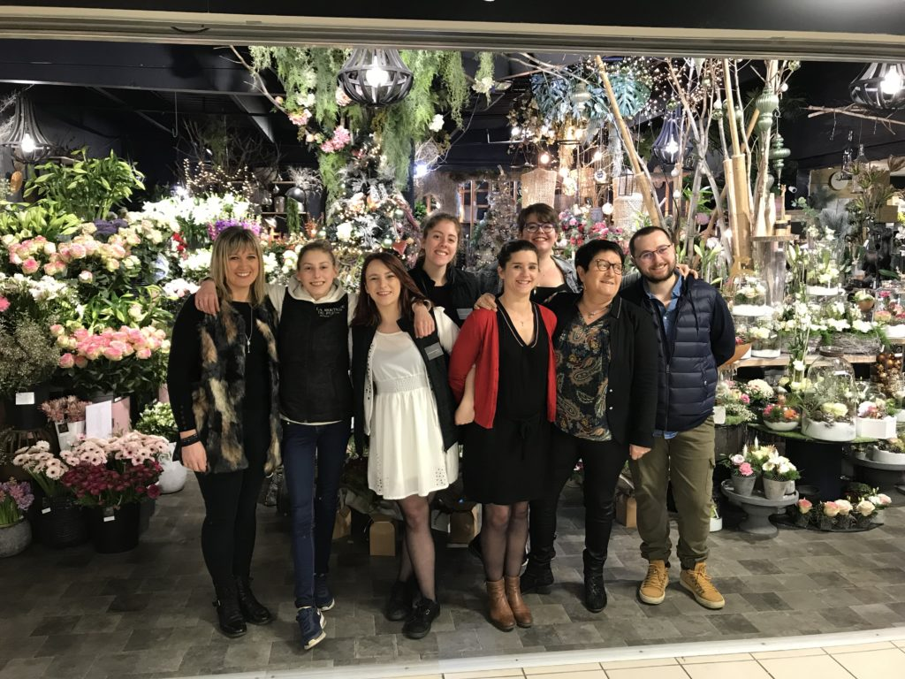

Une équipe heureuse est une équipe performante, et nous sommes fiers d’affirmer aujourd’hui qu’il est possible d’allier prestations sérieuses et bonne humeur.
Il faut dire que notre équipe est formidable : complémentaire, soudée, portée par une même ambition (la satisfaction de nos clients)…
L'heureuse Présidente
Co-fondatrice de La Team , Silvia a tout simplement inventé Internet (et Google, mais chut). Pionnière du e-commerce et de l’analyse des comportements des internautes, elle partage avec l’équipe sa vision du digital et sa veille permanente sur le développement durable.
Elle dirige aujourd’hui l’agence de Marseille (et siège social de La Team), où elle a développé un goût certain pour les lunettes de soleil dorées et la conduite sportive. Ses passions : la techno, le vin nature, le yoga et les graines germées.
L'étincelante Directrice
Si vous recherchez la définition de dynamisme dans le dictionnaire, ne vous étonnez pas de tomber sur une photo de Lucie.
C’est simple, après son (très important) premier café de la journée, notre co-fondatrice et directrice de l’agence entraîne ses équipes lyonnaises avec vitalité et rigueur ! Auparavant chez l’annonceur avant de créer l’agence, elle sait exactement ce qu’attendent nos clients, et met un point d’honneur à les rendre heureux.
Cette Sétoise d’origine apporte la fraîcheur de la Méditerranée au sein de l’agence et vous ressentirez sa bonne humeur et son sourire même à travers votre téléphone.
L'énergique Cheffe de Projet
Mettez vos lunettes de soleil, voilà Lucie Vouaillat qui rayonne ! Arrivée en 2016 pour un stage, elle a su rapidement s’imposer comme une cheffe de projet en puissance. Et c’est tout naturellement que nous l’avons gardée avec nous pour sa dernière année d’étude en alternance. Depuis septembre 2018, elle accompagne nos clients dans leurs stratégies d’acquisition de trafic et de fidélisation. En panne d’inspiration ? Un petit coup de fil et vous aurez de nouvelles idées d’opérations, en plus de raccrocher avec le sourire aux lèvres.
C’est toute sa force : un condensé de bonne humeur communicative, de dynamisme, de curiosité et de performance.
Ses défauts : son obsession pour le fromage (son alimentation se résume à la tartiflette et la raclette) et sa faculté savoyarde à placer des « y » dans toutes ses phrases.
La Cheffe de Projet engagée
Emilie a travaillé deux ans au pays des kiwis et des All blacks où elle a pu apprendre encore plus de mots en -ing pour parfaire sa maîtrise du marketing digital. Engagée, enthousiaste et toujours prête à rire, elle occupe une bonne partie de son temps libre à animer les réseaux sociaux d’associations en tant que bénévole. C’est dire si elle incarne les valeurs de La Team Web !
Dernière recrue de la Team marseillaise, elle est comme un poisson dans l’eau chez Makesense, où elle échange recettes de quinoa et sachets de thé bio avec ses coworkers. Nous lui laissons le privilège de côtoyer notre chère présidente tous les jours, mais elles doivent venir nous rendre visite tous les mois, avec des panisses et des savons, c’est la règle.
Le souriant Business Developper
Il fait partie de la team commerciale et l’Inbound marketing est devenu son meilleur ami.
Aurélien apporte joie et bonne humeur chaque matin à l’agence et aime par-dessus tout dénicher et chouchouter de nouveaux clients. Son arme secrète : un enthousiasme à toute épreuve.
Hélas pour nous, ses racines bretonnes ne lui ont pas donné de grands talents pour la cuisine. Lui, ce qui l’inspire c’est plutôt le foot, le foot, le foot (allez l’OL), la musique, et puis les voyages aussi.
Baroudeur dans l’âme, Aurélien connait l’Asie comme sa poche. Relever de nouveaux challenges ne lui fait pas peur. Ses chouettes idées et son amour débordant pour le développement durable font d’Aurélien un élément indispensable au développement de l’agence.

L'assistante créative
On pourrait définir Ophélie en un mot : efficacité.
Efficace pour sa productivité, efficace pour ses idées créatives, efficace pour s’adapter rapidement, efficace pour nous dire quand il ne faut pas trop l’embêter, efficace avec ses petits plats au bureau.
Ophélie nous a rejoints l’année dernière, mais on a l’impression qu’elle est dans l’équipe depuis des lustres. Son dada ? La création. Illustrator, Indesign, la vidéo, le Community Management… elle ne cesse de nous étonner et de satisfaire nos clients.
Un conseil : ne vous amusez pas à la challenger, elle déteste perdre
L'assistant avec une touche musicale
Victory, c’est la star cachée de La Team Web.
Belge d’origine, Victory débarque dans la région lyonnaise et étudie l’import-export, puis travaille en tant que commercial pour un organisme de certification.
Mais oubliez tout ça ! Maintenant ce qui lui importe, c’est le monde du digital pour exporter ses beats et son flow sur les plateformes musicales et les réseaux sociaux.
Quoi qu’il arrive, lorsqu’il sourit, Victory nous ravit. Nous sommes sûrs que vous aussi vous allez adorer travailler avec lui !
=======

>>>>>>> 660987b5d944a0b4574e60a69ac773c302adb40c